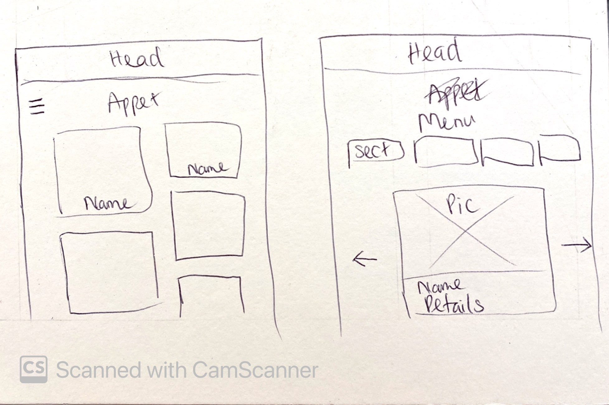
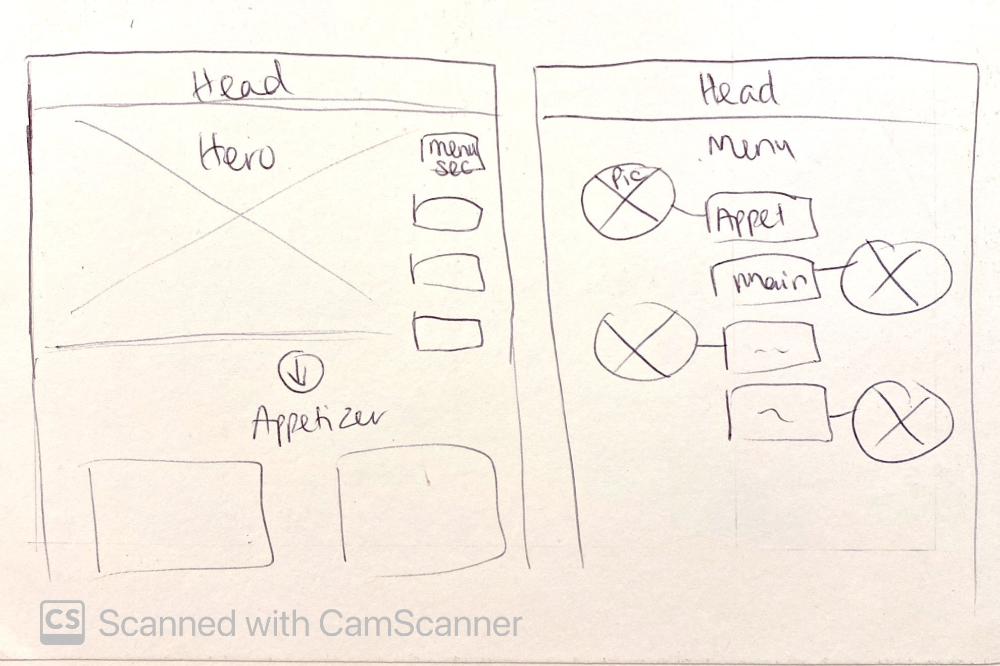
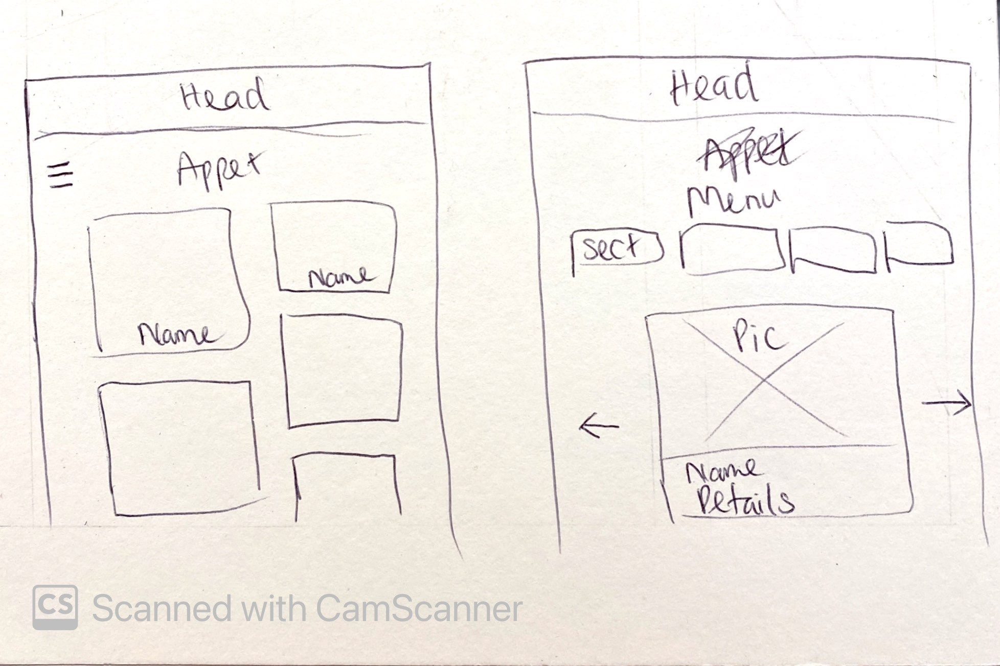
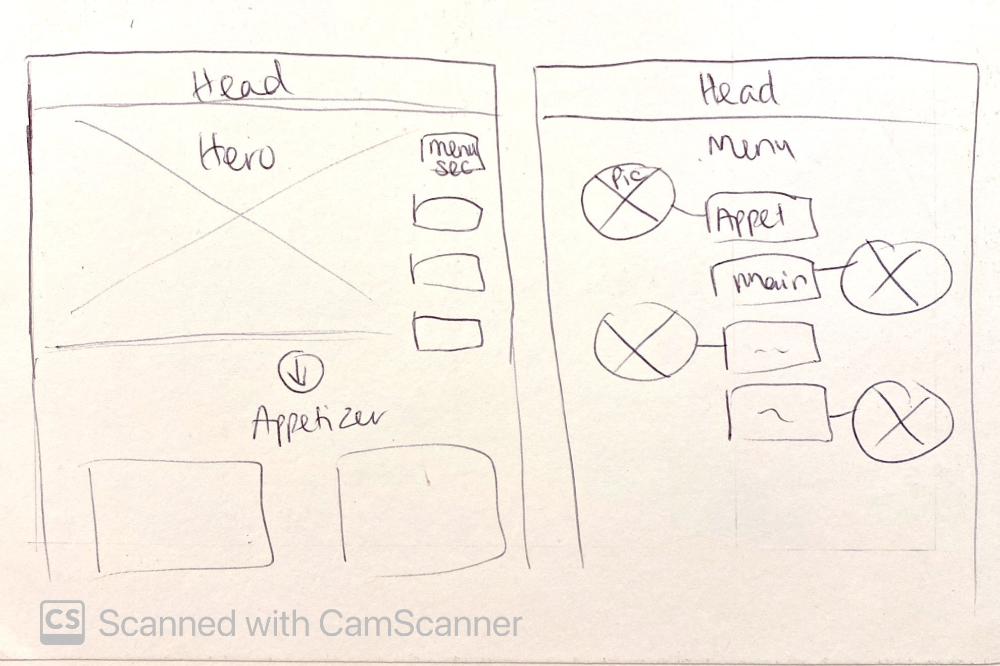

Azure for Students experience
During my internship at Microsoft, I joined the Cloud Experience Studio - Azure Core and was working on:
- Revamping the navigation and interface of the Azure for Students platform to increase user activities and engagement of student developers around the world.
- Designing a new feature for the platform - Customized study plan - to support students who are new to cloud computing.
Project
Internship
Timeline
June - September 2024
(3 months)
My role
Design Intern/ UX Lead (UX Design, UI Design, UX Research)
Stakeholders
Product Manager
Content Designer
UX Designers & Researchers
Engineers
CONTEXT
What is Azure for Students (A4S)?
Azure for Students program, part of the Education Hub on Microsoft Azure portal, was created specifically for student users, providing them with:
- Free Azure credits
- Free access to Azure services
- Free learning paths on cloud computing
The goal of Azure for Students is to:
PROBLEM
The platform wasn’t intuitive for student users, especially beginners in cloud computing
I conducted a survey with 130+ college students to understand their background and needs, then analyzed Net Promoter Score (NPS) and comments from 1000+ users on Azure for Students to learn about their experience, pain points, and expectations.
Students often encountered two main problems on the platform.
How Might We...
DESIGN PROJECT #1
Redesigning the website hierarchy and navigation
1. What did I focus on solving?
To make the platform easier to scan through, I decided to focus on redesigning the navigation bar and Overview page (homepage), since the first page users see after logging into their account often determines how they navigate the rest of the platform.
Some key pain points of the original designs are:
- Overwhelming amount of content
- Unclear content structure
- Confusing naming convention
2. How did I solve these design problems?
 



3. What did the outcome look like?
Key improvements in the new Overview page
- Reduced the amount of information on the page to focus on the most important content.
- Replaced the 3x2 grid layout with a row-by-row format for easier skimming and comprehension.
- Redesigned sections as collections of cards instead of exhaustive lists to create a clearer content structure.
- Added more imagery to visualize and highlight primary content.
- Converted hyperlinks into buttons to better emphasize the calls to action (CTAs).
DESIGN PROJECT #2
Leveraging AI to create a new feature - Customized Study Plan
1. Why this feature?
Although Azure for Students has been able to suggest some popular learning content for students on its Overview page, there are no one-size-fits-all recommendations, and many students new to cloud computing still struggle to decide what to learn.
Customized Study Plan is a new feature that could:
- Cater to each individual user’s needs and preferences
- Provide more relevant learning suggestions
⇒ Empowers students to learn to use Azure services
⇒ Increases user activities and user engagement with the platform
2. Why AI? How could it be helpful?
Based on my secondary research, AI has the potential to create personalized experiences for users by:
- Tracking users' learning history to provide resources that help advance their learning paths
- Evaluating users’ performance and engagement on the platform to suggest tools and learning content that keep them motivated
- Collecting feedback from users on their current study plans and enhance them
Integrating Microsoft Copilot AI assistant into the platform will also help embrace the new era of AI driven by Microsoft.
3. What was my design process?
Since I was working on a brand-new feature and it was my first time designing for AI, I went through a fun but challenging process of learning and designing simultaneously.
*Details about the AI implementation in this feature cannot be disclosed due to a Non-disclosure Agreement.
IMPACT & FEEDBACK
Students are excited to see the new design launch
Although the new design and features haven't been implemented or shipped yet, the usability testing sessions I conducted with users indicate that we can expect significant impact from the improvements.
~ 200,000 students
around the world will be impacted by the design improvements.
2:14 mins ⇒ 35s
Users will spend less time navigating and figuring out the new Overview page than the original page.
100% students
who tested the new design (6 out of 6 users) expressed excitement about the new Customized Study Plan feature and indicated that they would use it once it’s launched.
⇑ 5-10 NPS points
Net Promoter Score (NPS) of the product is expected to increase, as the user satisfaction on the platform is also expected to be improved.
My final presentation on the project also received positive feedback and recognition from the Vice President of the Cloud Experience Studio, as well as other senior and principal designers/researchers, which was a great honor and a motivation for me to keep moving forward.
REFLECTION
What I learned during the internship
1. Balancing user goals and business goals
This was the most challenging part of my project. However, it was also a perfect opportunity for me to learn how to communicate effectively with cross-functional stakeholders and users, and to go the extra mile by conducting additional research and usability testing to support my design.
2. Leverage AI to solve user problems
I had a great time (and also the first time!) designing an AI-powered feature for my product, especially when I decided to think outside the box and explore ways to implement Copilot beyond just a chatbot.
3. Design is an evolving process
Juggling multiple user/business requirements, I felt the pressure to finalize a design that could satisfy everyone. However, design is an iterative process, and there’s not really a “final” design. What I delivered was the best possible within the internship's time constraints, and there'll always be room for improvement.
So, keep learning and moving forward!